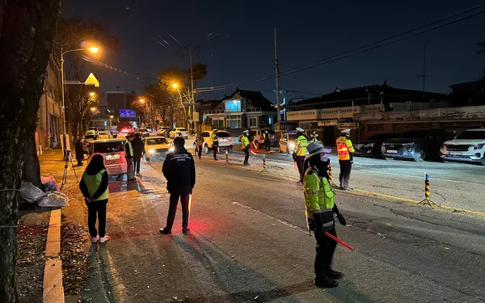
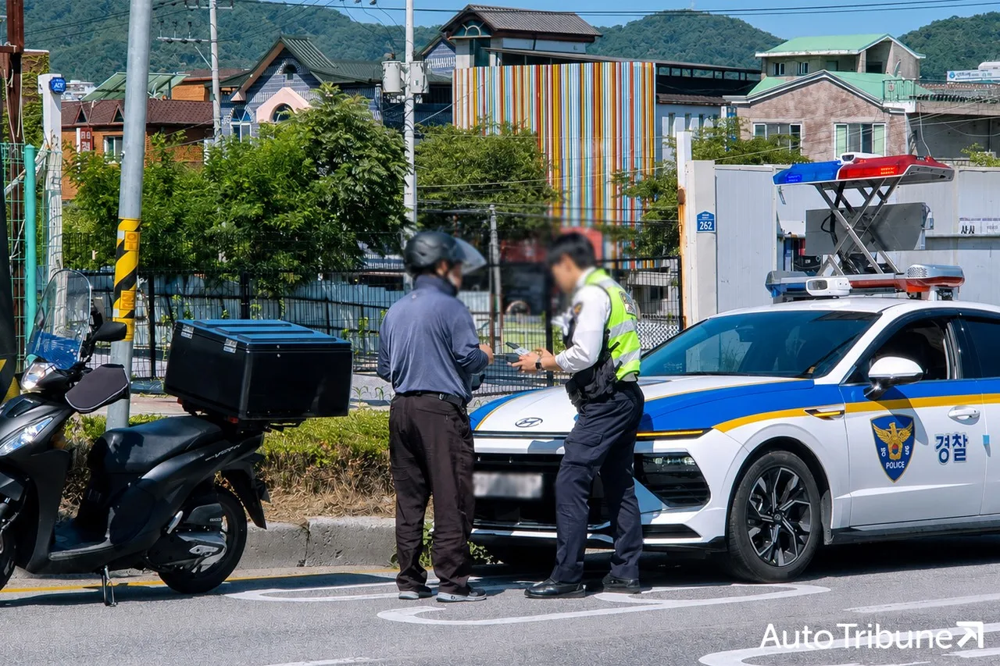
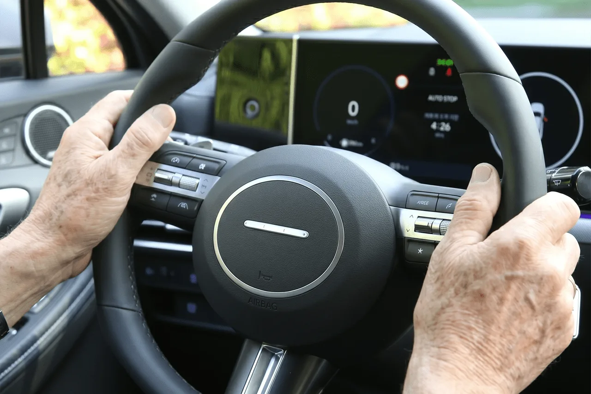

▲ 음주 단속 현장. 단속 여부를 날씨로 예측하는 것은 통하지 않는다
음주운전을 하는 사람들은 자기가 위험하다는 것을 모를까요. 조사 결과는 그보다 복잡합니다. 아는 사람도 있고, 모르는 사람도 있고, 아예 생각하지 않은 사람도 있습니다.
한국도로교통공단이 2026년 6월 24일부터 7월 24일까지 음주운전자 교육 수강생 924명을 조사했습니다. 이미 적발돼 교육을 받고 있는 사람들이므로, 음주운전 당시의 판단을 되짚기에 적합한 표본입니다.
1. 비 오는 날 단속이 적다는 믿음
응답자의 29.3%, 271명이 "비나 눈이 오는 날은 단속이 적다"고 생각했습니다. 열 명 중 세 명꼴입니다.

▲ 야간 단속 현장. 단속 지점과 시간은 날씨와 별개로 운영된다 ⓒ 오토트리뷴
이 믿음에는 나름의 근거가 있어 보입니다. 궂은 날씨에는 야외 근무가 힘들고, 시야도 나쁘니 단속을 덜 할 것이라는 추론입니다.
그러나 이 추론은 위험을 두 배로 만듭니다. 설령 단속 확률이 낮아진다 해도, 빗길은 제동거리가 늘고 시야가 나빠지는 조건이기 때문입니다. 음주로 반응 속도가 떨어진 상태에서 노면 마찰까지 줄면, 사고 확률은 단속 확률과 반대 방향으로 움직입니다.

▲ 단속 대상은 사륜차에 한정되지 않는다 ⓒ 오토트리뷴
단속을 피하는 것과 사고를 피하는 것은 다른 문제입니다. 조사가 드러낸 것은 이 두 가지를 혼동하는 인식이 실제로 존재한다는 사실입니다.
2. 자기 상태를 스스로 판단할 수 있는가
더 중요한 숫자는 이쪽입니다. 적발 당시 자신의 음주 상태를 어떻게 인식했는지 물었더니 응답이 다섯 갈래로 갈렸습니다.
| 인식 | 비율 | 인원 |
|---|---|---|
| 면허취소 수준 | 25.2% | 233명 |
| 단속기준 이하 | 22.8% | 211명 |
| 면허정지 수준 | 20.8% | 192명 |
| 생각해보지 않음 | 19.6% | 181명 |
| 술에 취해 판단 불가 | 11.6% | 107명 |
세 갈래로 나눠 읽으면 구조가 보입니다. 자신이 면허정지 이상 수준이라고 인식한 비율은 46.0%(425명)였습니다. 절반에 가까운 사람이 "위험한 상태"임을 알면서 운전대를 잡았다는 뜻입니다.

▲ 운전대를 잡는 순간의 판단이 결과를 가른다 ⓒ 오토트리뷴
반대편에는 22.8%가 있습니다. 자신이 단속 기준 이하라고 믿었는데 적발된 사람들입니다. 이들은 위험을 감수한 것이 아니라 계산을 틀린 것입니다.
가장 무거운 숫자는 나머지입니다. "생각해보지 않았다"가 19.6%, "술에 취해 판단할 수 없었다"가 11.6%로, 합치면 31.2%가 판단 자체를 하지 않았습니다.
3. 왜 운전대를 잡았나
음주운전을 한 이유를 물은 결과도 함께 공개됐습니다. 1위는 "술이 깼다고 판단해서"로 24.5%(226명)였습니다.
| 이유 | 비율 | 인원 |
|---|---|---|
| 술이 깼다고 판단 | 24.5% | 226명 |
| 소량만 마셨다고 생각 | 16.0% | 148명 |
| 거리 문제(가까워서) | 16.0% | 148명 |
| 대리운전·대중교통 부재 | 15.5% | 143명 |
1·2위가 모두 자기 판단입니다. "깼다", "조금만 마셨다"를 합치면 40.5%입니다. 앞서 본 "단속기준 이하로 인식했다 22.8%"와 같은 뿌리에서 나옵니다.
📍 알코올 분해는 시간이 정합니다
"술이 깼다"는 감각은 혈중알코올농도와 일치하지 않습니다. 졸음이 가시고 정신이 드는 것은 각성 상태의 변화일 뿐, 알코올이 분해된 것과는 다릅니다. 분해 속도는 체중·성별·체질에 따라 다르지만 시간이 지나야만 떨어지고, 커피나 사우나로 앞당길 수 없습니다.
3·4위는 성격이 다릅니다. "거리가 가까워서"(16.0%)와 "대리운전·대중교통이 없어서"(15.5%)는 환경 요인입니다. 특히 지방과 심야 시간대에서 대안 부재는 실제 제약으로 작동합니다.
4. 기준은 감각이 아니라 수치다
도로교통법상 기준은 명확합니다. 혈중알코올농도 0.03% 이상이면 면허정지, 0.08% 이상이면 면허취소 대상입니다. 이 수치는 운전자의 컨디션이나 자각과 무관하게 측정값으로만 판정됩니다.
0.03%는 생각보다 낮은 기준입니다. 소주 한두 잔으로도 도달할 수 있는 수준이고, "취하지 않았다"는 감각과 충분히 공존합니다. 조사에서 "소량만 마셨다"고 답한 148명이 여기에 걸린 것으로 보입니다.
다음 날 아침도 같은 기준으로 판정됩니다. 잠을 잤다는 사실은 면책 사유가 아닙니다. 늦게까지 많이 마셨다면 아침에도 기준을 넘어설 수 있습니다.
5. 조사가 내린 결론
공단이 제시한 권고는 한 문장입니다. "술을 마셨다면 운전 가능 여부를 스스로 판단하지 말고 운전대를 잡지 않아야 한다."
이 권고가 왜 그렇게 단순한지는 조사 결과가 설명합니다. 자기 판단이 맞았던 사람보다 틀렸거나 아예 판단하지 않은 사람이 더 많았기 때문입니다. 판단의 정확도를 높이는 방향이 아니라, 판단을 시도하지 않는 방향이 실효적이라는 뜻입니다.
실천 방법은 술자리 전에 정해두는 것입니다. 차를 어디에 둘지, 누가 운전할지, 대리 호출이 어려운 지역이라면 어떻게 귀가할지를 미리 정해두면 술자리에서 판단할 일이 없어집니다.
정리하면 이렇습니다. 이번 조사에서 가장 위험한 응답은 "비 오는 날은 단속이 적다"가 아니라 "생각해보지 않았다"였습니다. 단속을 피하려는 계산보다, 계산 자체를 하지 않는 상태가 더 자주 사고로 이어집니다.